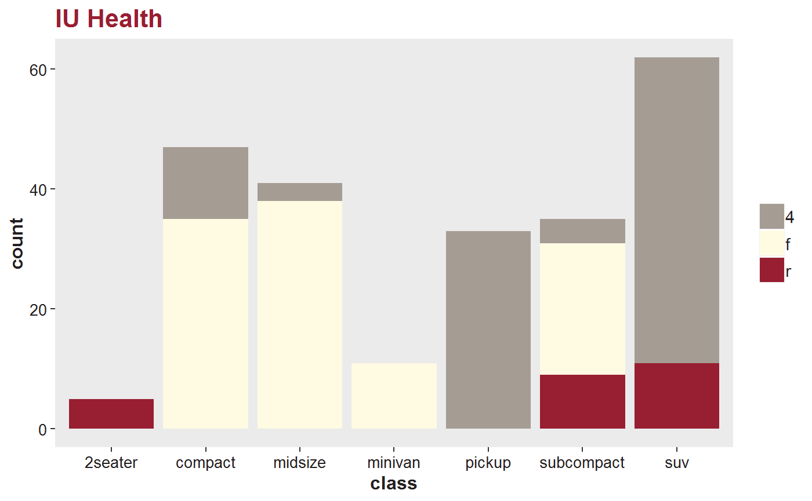
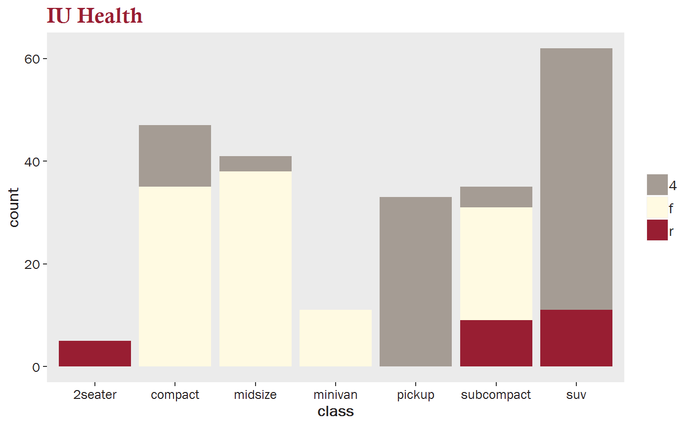

Helper functions for doing data analysis at IU Health.
Match MRNs
Match people from two different EMRs.
## mrn_x first_name_x last_name_x birth_date_x mrn_y first_name_y
## 1 11 James Brown 1978-01-01 21 James
## 2 12 Charlie Manson 1952-05-15 22 Charles
## 3 14 Gary Oldman 1960-12-15 24 Gary
## 4 15 Steve Brown 1980-01-01 25 Stephen
## 5 17 Phil Bowers 1980-01-01 27 Philip
## last_name_y birth_date_y dist
## 1 Brown 1978-01-01 0
## 2 Manson 1952-05-15 2
## 3 Old-man 1960-12-15 0
## 4 Brown 1980-01-01 3
## 5 Bowers Jr 1980-01-01 2IU Health Theme
Add an IU Health theme to your ggplot2 graph.
library(ggplot2)
ggplot(mpg, aes(class, fill = drv)) + geom_bar() + theme_iuh() +
scale_fill_iuh() + ggtitle("IU Health")
Use IU Health fonts.
library(extrafont)
# it will take a few minutes to import fonts from your operating system
font_import(prompt = FALSE)
loadfonts(quiet = TRUE)
ggplot(mpg, aes(class, fill = drv)) + geom_bar() + theme_iuh() +
scale_fill_iuh() + ggtitle("IU Health")
ICD categories
Add a column of categories to a data.frame of ICD codes
x <- data.frame(icd = c("43852", "M93929", "W002XXA"))
add_icd_category(icd = x, icd_column = "icd")## icd global_short_description
## 1 43852 Late eff CVD
## 2 M93929 Ot bone dx
## 3 W002XXA E Codes: Fall